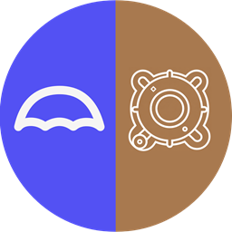

Umbrel is a home server where you can run your own Handshake node. With Castell running on it, you can host your own static https site on a Handshake name, secured with DANE instead of a certificate authority.
Note: Castell is an app that creates the private key and certificate for your TLD, computes the TLSA record and configures the web server (using Caddy). It gives you the records to add at your DNS host and the port-forwarding rule to set on your router. Finally, it stores and serves the files for your website.
Installing Castell is as simple as installing any other Umbrel community app: go to App Store → Community App Stores → Manage, paste https://github.com/galetaire/castell and install Castell.
You'll need a TLD held in your own Bob Wallet or Namebase Wallet, plus a small amount of HNS (10 HNS is more than enough). If you're new to Handshake, you can get some HNS from the faucet.
Once you have some HNS, you can bid on TLDs in name auctions using Bob or Namebase. Both are self-custodial wallets that let you take part in the auctions directly.
Yeil DNS is a service that lets you point your self-custodied TLD to its nameservers, so you can manage your domain records without giving up custody of your TLD. At any time, you can use your wallet to remove the records that point your TLD to Yeil, ending the connection.
You need to connect your TLD (in your wallet) to Yeil DNS. In your Yeil account, go to New zone, type the TLD name you own, and click Add. Once it's created, it will show the records you need to add to your TLD in Bob Wallet to create the connection.
In Bob Wallet, go to Domain Manager and click your TLD to open a new screen. In the Records section, add the records provided by Yeil:
a.ns.yeil.org; add a dot . at the end if you get errors, e.g. b.ns.yeil.org.Click Submit to save the changes. Updating takes roughly 10–20 minutes (the time for each block to be minted). After that, you should be able to see the new records on any HNS explorer, such as Shakeshift.
At this point we move to the Castell app, and the guide splits into two different paths, depending on how you decide to deliver your static site to visitors:
Run Fingertip-dit-0.0.4.msi. Before you do:
%LOCALAPPDATA%\Fingertip and needs no admin rights. It upgrades an existing Fingertip 0.0.3 in place.Run Fingertip-dit-0.0.4.msi. Before you do:
%LOCALAPPDATA%\Fingertip and needs no admin rights. It upgrades an existing Fingertip 0.0.3 in place.